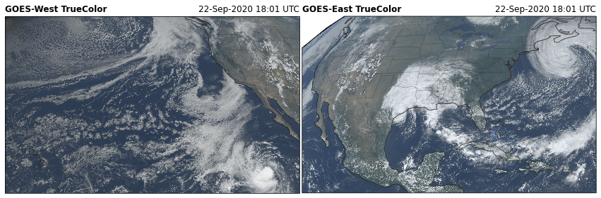
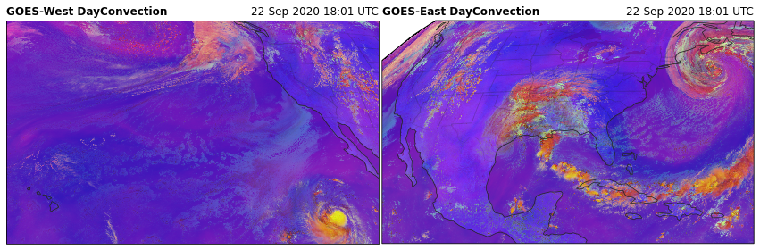
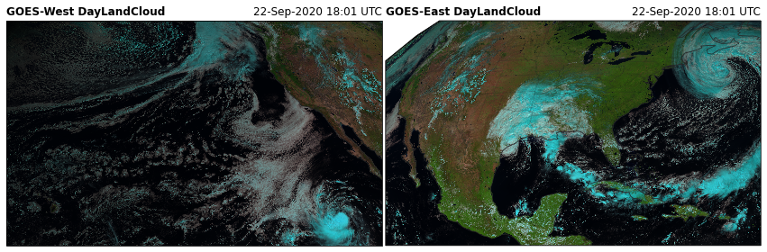
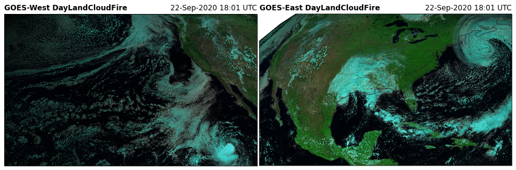
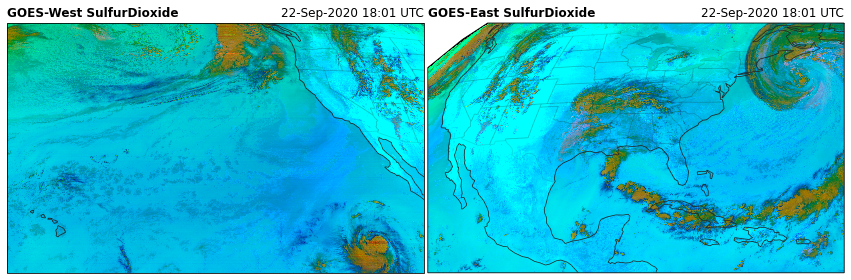
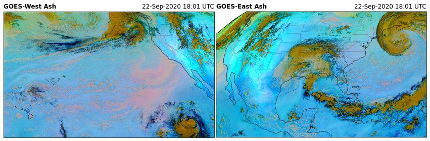
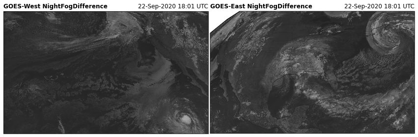

GOES ABI RGB Recipe Demonstration¶
I have gathered several RGB recipies from the RAMMB CIRA website, including:
TrueColor
FireTemperature
AirMass
DayCloudPhase
DayConvection
DayLandCloudFire
WaterVapor
DaySnowFog
etc.
These recipies are in the rgb module.
from goes2go.rgb import *
For more details on how to generate these plots, see the example on the Unidata gallery.
[1]:
import matplotlib.pyplot as plt
import cartopy.crs as ccrs
from datetime import datetime
import pandas as pd
from goes2go.rgb import *
from goes2go.data import goes_latest, goes_nearesttime
from goes2go.tools import abi_crs
from toolbox.cartopy_tools import common_features
[2]:
DATE = datetime(2020, 9, 22, 18)
G16 = goes_nearesttime(attime=DATE, satellite=16, product='ABI')
G17 = goes_nearesttime(attime=DATE, satellite=17, product='ABI')
_______________________________
| Satellite: noaa-goes16 |
| Product: ABI-L2-MCMIPC |
| Domain: C |
📦 Finished downloading [1] files to [/p/cwfs/blaylock/data/noaa-goes16/ABI-L2-MCMIPC].
📚 Finished reading [1] files into xarray.Dataset.
_______________________________
| Satellite: noaa-goes17 |
| Product: ABI-L2-MCMIPC |
| Domain: C |
📦 Finished downloading [1] files to [/p/cwfs/blaylock/data/noaa-goes17/ABI-L2-MCMIPC].
📚 Finished reading [1] files into xarray.Dataset.
[3]:
# Get projection object and sweeps
#crs16, x16, y16 = abi_crs(G16)
#crs17, x17, y17 = abi_crs(G17)
[4]:
G16[list(G16)[0]]
[4]:
<xarray.DataArray 'CMI_C01' (y: 1500, x: 2500)>
[3750000 values with dtype=float32]
Coordinates:
t datetime64[ns] 2020-09-22T18:02:31.941746048
* y (y) float32 0.1282 0.1282 0.1281 ... 0.04432 0.04427
* x (x) float32 -0.1013 -0.1013 -0.1012 ... 0.03856 0.03861
y_image float32 0.08624
x_image float32 -0.03136
dataset_name <U74 'OR_ABI-L2-MCMIPC-M6_G16_s20202661801132_e20202...
date_created <U22 '2020-09-22T18:04:06.0Z'
time_coverage_start <U22 '2020-09-22T18:01:13.2Z'
time_coverage_end <U22 '2020-09-22T18:03:50.5Z'
Attributes:
long_name: ABI Cloud and Moisture Imagery reflectance factor
standard_name: toa_lambertian_equivalent_albedo_multiplied_by_co...
sensor_band_bit_depth: 10
downsampling_method: average
valid_range: [ 0 4095]
units: 1
resolution: y: 0.000056 rad x: 0.000056 rad
grid_mapping: goes_imager_projection
cell_methods: t: point area: sum (interval: 0.000028 rad)
ancillary_variables: DQF_C01xarray.DataArray
'CMI_C01'
- y: 1500
- x: 2500
- ...
[3750000 values with dtype=float32]
- t()datetime64[ns]...
- long_name :
- J2000 epoch mid-point between the start and end image scan in seconds
- standard_name :
- time
- axis :
- T
- bounds :
- time_bounds
array('2020-09-22T18:02:31.941746048', dtype='datetime64[ns]') - y(y)float320.1282 0.1282 ... 0.04432 0.04427
- units :
- rad
- axis :
- Y
- long_name :
- GOES fixed grid projection y-coordinate
- standard_name :
- projection_y_coordinate
array([0.128212, 0.128156, 0.1281 , ..., 0.04438 , 0.044324, 0.044268], dtype=float32) - x(x)float32-0.1013 -0.1013 ... 0.03856 0.03861
- units :
- rad
- axis :
- X
- long_name :
- GOES fixed grid projection x-coordinate
- standard_name :
- projection_x_coordinate
array([-0.101332, -0.101276, -0.10122 , ..., 0.0385 , 0.038556, 0.038612], dtype=float32) - y_image()float32...
- long_name :
- GOES-R fixed grid projection y-coordinate center of image
- standard_name :
- projection_y_coordinate
- units :
- rad
- axis :
- Y
array(0.08624, dtype=float32)
- x_image()float32...
- long_name :
- GOES-R fixed grid projection x-coordinate center of image
- standard_name :
- projection_x_coordinate
- units :
- rad
- axis :
- X
array(-0.03136, dtype=float32)
- dataset_name()<U74'OR_ABI-L2-MCMIPC-M6_G16_s202026...
array('OR_ABI-L2-MCMIPC-M6_G16_s20202661801132_e20202661803505_c20202661804060.nc', dtype='<U74') - date_created()<U22'2020-09-22T18:04:06.0Z'
array('2020-09-22T18:04:06.0Z', dtype='<U22') - time_coverage_start()<U22'2020-09-22T18:01:13.2Z'
array('2020-09-22T18:01:13.2Z', dtype='<U22') - time_coverage_end()<U22'2020-09-22T18:03:50.5Z'
array('2020-09-22T18:03:50.5Z', dtype='<U22')
- long_name :
- ABI Cloud and Moisture Imagery reflectance factor
- standard_name :
- toa_lambertian_equivalent_albedo_multiplied_by_cosine_solar_zenith_angle
- sensor_band_bit_depth :
- 10
- downsampling_method :
- average
- valid_range :
- [ 0 4095]
- units :
- 1
- resolution :
- y: 0.000056 rad x: 0.000056 rad
- grid_mapping :
- goes_imager_projection
- cell_methods :
- t: point area: sum (interval: 0.000028 rad)
- ancillary_variables :
- DQF_C01
[5]:
functions = [TrueColor, NaturalColor, FireTemperature, AirMass, \
DayCloudPhase, DayConvection, DayCloudConvection,\
DayLandCloud, DayLandCloudFire, \
WaterVapor, DifferentialWaterVapor, \
DaySnowFog, NighttimeMicrophysics, \
Dust, SulfurDioxide, Ash, \
SplitWindowDifference, NightFogDifference]
str_date_16 = f"{pd.to_datetime(G16.time_coverage_start.item()):%d-%b-%Y %H:%M UTC}"
str_date_17 = f"{pd.to_datetime(G16.time_coverage_start.item()):%d-%b-%Y %H:%M UTC}"
for i, func in enumerate(functions):
fig = plt.figure(figsize=(15, 12))
RGB17 = func(G17)
RGB16 = func(G16)
# Create axis with Geostationary projection
ax17 = fig.add_subplot(1, 2, 1, projection=RGB17.crs)
ax16 = fig.add_subplot(1, 2, 2, projection=RGB16.crs)
# Add common features to map (coastlines and state borders)
common_features(ax=ax16, STATES=True)
common_features(ax=ax17, STATES=True)
# GOES-West
ax17.set_title(f'GOES-West {func.__name__}', loc='left', fontweight='bold')
ax17.set_title(f'{str_date_17}', loc='right')
ax17.imshow(RGB17[list(RGB17)[0]], **RGB17.imshow_kwargs)
# GOES-East
ax16.set_title(f'GOES-East {func.__name__}', loc='left', fontweight='bold')
ax16.set_title(f'{str_date_16}', loc='right')
ax16.imshow(RGB16[list(RGB16)[0]], **RGB16.imshow_kwargs)
plt.subplots_adjust(wspace=0.01)
#plt.savefig(f'../images/{func.__name__}', bbox_inches='tight')
plt.savefig(f'../_static/{func.__name__}', bbox_inches='tight')













Full Disk Image¶
[6]:
g = goes_nearesttime('2021-01-01 18:00', satellite=16, product='ABI', domain='F')
_______________________________
| Satellite: noaa-goes16 |
| Product: ABI-L2-MCMIPF |
| Domain: F |
📦 Finished downloading [1] files to [/p/cwfs/blaylock/data/noaa-goes16/ABI-L2-MCMIPF].
📚 Finished reading [1] files into xarray.Dataset.
[7]:
# Original TrueColor
tc = TrueColor(g, night_IR=False)
# Rick Kohrs's Natural Color
nc = NaturalColor(g, night_IR=False)
[8]:
#%config InlineBackend.print_figure_kwargs = {'facecolor' : 'k'}
%config InlineBackend.print_figure_kwargs = {'facecolor' : 'none'}
#%config InlineBackend.print_figure_kwargs = {'facecolor' : 'w'}
fig, (ax1, ax2) = plt.subplots(1,2, figsize=[20,10], subplot_kw=dict(projection=tc.crs))
for ax in [ax1, ax2]:
common_features(ax=ax, STATES=True)
ax1.imshow(tc.TrueColor, **tc.imshow_kwargs)
ax1.set_title('True Color', color='w')
ax1.axis('off')
ax2.imshow(nc.NaturalColor, **nc.imshow_kwargs)
ax2.set_title('Natural Color', color='w')
ax2.axis('off')
plt.subplots_adjust(wspace=0.01)
fig.set_facecolor('k')

[9]:
#%config InlineBackend.print_figure_kwargs = {'facecolor' : 'k'}
#%config InlineBackend.print_figure_kwargs = {'facecolor' : 'none'}
%config InlineBackend.print_figure_kwargs = {'facecolor' : 'w'}
RGB Sample¶
[10]:
# Obtain a GOES ABI multichannel image
g = goes_nearesttime('2020-12-13 18:00',
satellite=16, product='ABI', domain='F')
_______________________________
| Satellite: noaa-goes16 |
| Product: ABI-L2-MCMIPF |
| Domain: F |
📦 Finished downloading [1] files to [/p/cwfs/blaylock/data/noaa-goes16/ABI-L2-MCMIPF].
📚 Finished reading [1] files into xarray.Dataset.
[11]:
functions = [NaturalColor, AirMass, \
DayCloudPhase, DayCloudConvection,
WaterVapor]
fig, axes = plt.subplots(1,len(functions), figsize=[15,3.5], dpi=100)
for func, ax in zip(functions, axes):
nc = func(g.thin(5))
ax.imshow(nc[func.__name__])
ax.axis('off')
plt.subplots_adjust(wspace=.01)
plt.savefig(f'../_static/RGB_sample', bbox_inches='tight', facecolor='k')

🚀 Rocket Plume RGB¶
A new RGB recipie from CIMSS
Obtain the Mesoscale scan to identify rocket plume, because the time resolution is every 30 seconds when both mesoscale scans are in the same location
[12]:
import matplotlib.pyplot as plt
import pandas as pd
from goes2go.data import goes_nearesttime
from goes2go.rgb import RocketPlume
from toolbox.cartopy_tools import common_features
[13]:
# Rocket plume at 00:29 UTC 16 November 2020 for SpaceX crewed mission
g = goes_nearesttime('2020-11-16 00:29:50', product="ABI", satellite='goes16', domain='M')
_______________________________
| Satellite: noaa-goes16 |
| Product: ABI-L2-MCMIPM |
| Domain: M |
📦 Finished downloading [1] files to [/p/cwfs/blaylock/data/noaa-goes16/ABI-L2-MCMIPM].
📚 Finished reading [1] files into xarray.Dataset.
[14]:
RGB = RocketPlume(g, night=False)
[15]:
fig = plt.figure(figsize=(15, 12))
str_date_16 = f"{pd.to_datetime(g.time_coverage_start.item()):%d-%b-%Y %H:%M UTC}"
# Create axis with Geostationary projection
ax16_wide = fig.add_subplot(1, 2, 1, projection=RGB.crs)
ax16_zoom = fig.add_subplot(1, 2, 2, projection=RGB.crs)
# Add common features to map (coastlines and state borders)
common_features('50m', ax=ax16_wide, STATES=True, color='white')
common_features('10m', ax=ax16_zoom, STATES=True, color='white')
# GOES-East
ax16_wide.set_title(f'GOES-East RocketPlume', loc='left', fontweight='bold')
ax16_wide.set_title(f'{str_date_16}', loc='right')
ax16_wide.imshow(RGB[list(RGB)[0]], **RGB.imshow_kwargs)
ax16_zoom.set_title(f'SpaceX Crewed Misison Launch', loc='center')
ax16_zoom.imshow(RGB[list(RGB)[0]], **RGB.imshow_kwargs)
ax16_zoom.center_extent(-80.2, 29.1, pad=20_0000)
left, right, bottom, top = ax16_zoom.get_extent()
lons = [left, right, right, left, left]
lats = [top, top, bottom, bottom, top]
ax16_wide.plot(lons, lats, color='navy')
plt.subplots_adjust(wspace=0.01)
#plt.savefig(f'../images/{func.__name__}', bbox_inches='tight')
plt.savefig(f'../_static/RocketPlume', bbox_inches='tight')
/p/home/blaylock/anaconda3/envs/basic38/lib/python3.8/site-packages/cartopy/mpl/style.py:76: UserWarning: facecolor will have no effect as it has been defined as "never".
warnings.warn('facecolor will have no effect as it has been '

[ ]: